ownCloud Web for Users
Introduction
These sections describe the web UI from a regular user’s perspective without administrator privileges.
If you have been using ownCloud before but with the ownCloud Server user interface, you may want to check out section ownCloud Web with ownCloud Server to get an overview of the main differences.
The following description assumes you’re new to ownCloud.
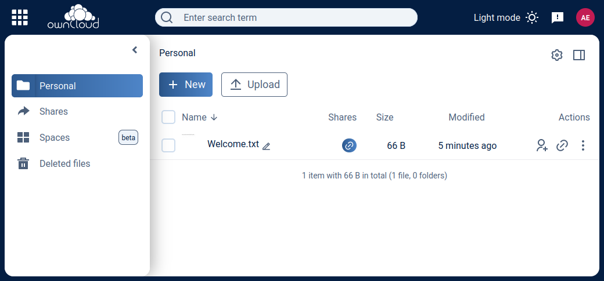
Top Navigation
Application Switcher
The square in the upper left corner with the nine tiles is your application switcher. There you can switch between Files and User management and installed apps.
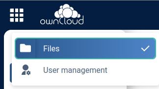
Global Search
The new search not only scans the content in your ownCloud, but is also prepared to search in applications like chat tools or on the web.
Left Sidebar
Personal
Under Personal in the left sidebar you have your private place where you can upload files and folders or create them directly on Infinite Scale.
If you upload or create a file with a name beginning with a period, you won’t see it, but it will be counted. For example, if you create the files NewFile.txt and .config, you will only see NewFile.txt because files starting with a dot usually are configuration files that only clutter the screen. But the line underneath the file states 2 items.
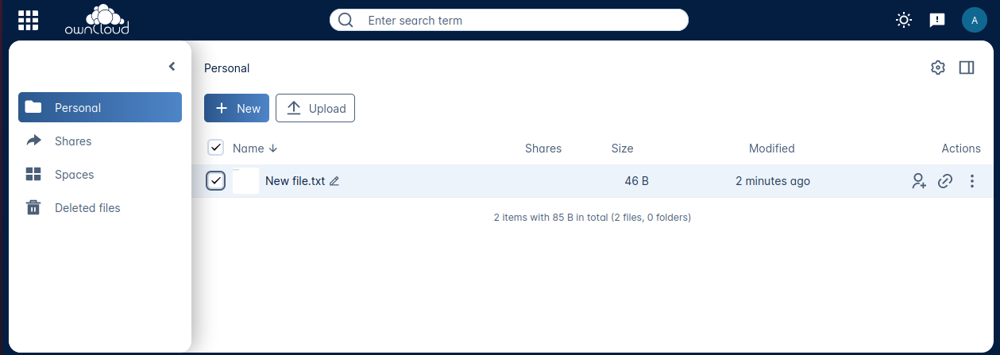
But of course you want to be able to access them. Click on the cogwheel icon in the upper right corner and activate Show hidden files, and you will be able to work with these files.
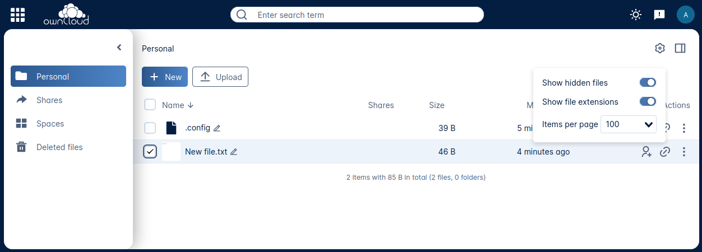
You can also share files either via public link or internally with other users on the same Infinite Scale instance by invitation. Either way, you can grant permission to access files as Viewer or Editor.
Shares
Under Shares, you can see all files or folders that have been shared with you. The origin of the share always resides in a space as you’ll see below. You can accept the share or decline. You can see who the owner of the share is and who else it has been shared with. Then there’s the time or date when the content has been shared.
A click on the three vertical dots opens an actions menu. Actions can be performed on a file or folder depending on the file type (video, text, etc.) and on the permissions granted by the sharer.
Spaces
Spaces are the foundation for sharing data. Spaces are not owned by someone. Spaces store data and are designed for collaboration. Spaces first need to be created by a user having the Create Space permission, see the Creating a Space documentation for details. The Manager role for managing the space can be delegated to one or more users, and the creator can remove himself or herself from this role completely.
Spaces are organized by the space members themselves without intervention from admins. If members leave, sharing is not interrupted and sharees can keep working. This is true not only for the whole space or for single files or directories, but also for roles and permissions assigned.
A space either shows up as Personal space or in the Spaces area. When only content is shared, it is shown in the Shared area, making it easier to distinguish the way of sharing, as well as viewing and assigning sharing roles and permissions.
Space Areas
- Personal
-
Every user has a private space, where they can store or share content. This space is created automatically when the user is set up. Delegating the managing role or adding members to the personal space is not possible, but sharing single files or directories is enabled. With the inability to assign or delegate the managing role or add space members, the personal space stays in total control of the user.
Consider using the personal space for data that is only relevant to you and shouldn’t be shared. For anything else better create one or more additional spaces for data you want to share. This increases security a lot and prevents accidentally providing private data to the outside world. In addition, when leaving the company or organization, sharing stays untouched and private data can safely be deleted. - Spaces
-
Spaces of which a user is member show up here. This area is intended for collaboration, like when sharing on a larger scale, working together on a project, in a department or in a school class.
Deleted Files
Under Deleted Files you find content that you have deleted from your Personal Space. Here you can either really delete the file for good or restore it if deletion was a mistake.
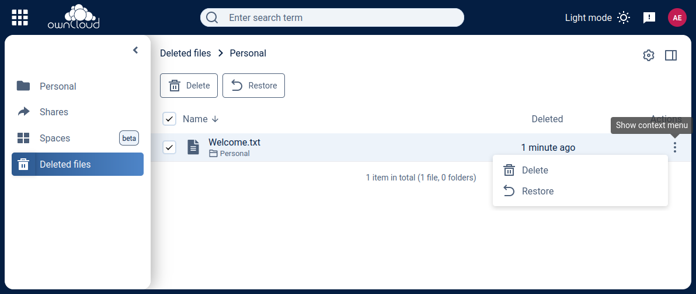
If files in one of the spaces are deleted, they are placed in the trashbin of the respective space so they can be restored from there. Go to the Spaces overview, click on the vertical three dots in the space representation and select Deleted Files. You’ll be directed to the space’s trashbin where you can delete for real or restore.
|
Right Sidebar
The right sidebar can be opened via the square icon with the dark or gray sidebar under your avatar symbol in the upper right corner:
Here you find details about selected files: name, size, last modification time and with whom they have been shared. From here you can also use the Actions menu and reach the Share section.
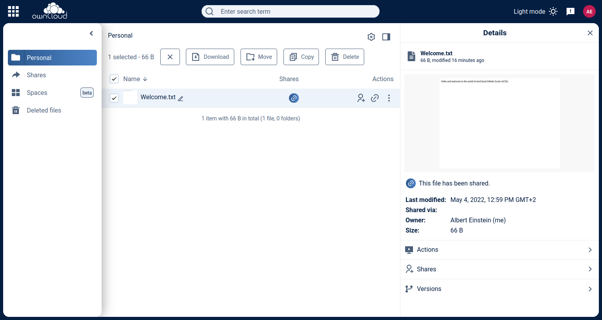
| The file size values differ depending on the client you are using. Some operating systems like iOS and macOS use the decimal system (power of 10) where 1kB or one kilobyte consists of 1000 bytes, while Linux, Android and Windows use the binary system (power of 2) where 1KB consists of 1024 bytes and is called a kibibyte. So no reason to worry if you see different file sizes on ownCloud Web and your mobile device. |
Sharing
If you have been using the standard web interface on ownCloud server previously, the new way of sharing may require some getting used to, but it’s even simpler now.
Sharing is either done via the icons to the right of a file or folder or via the Actions menu or by opening the right sidebar and clicking Shares. In any case, the right sidebar provides you a dialog where you can choose between inviting people registered on the Infinite Scale instance by entering their names or email addresses in the Invite field and click Share or by sharing via link.
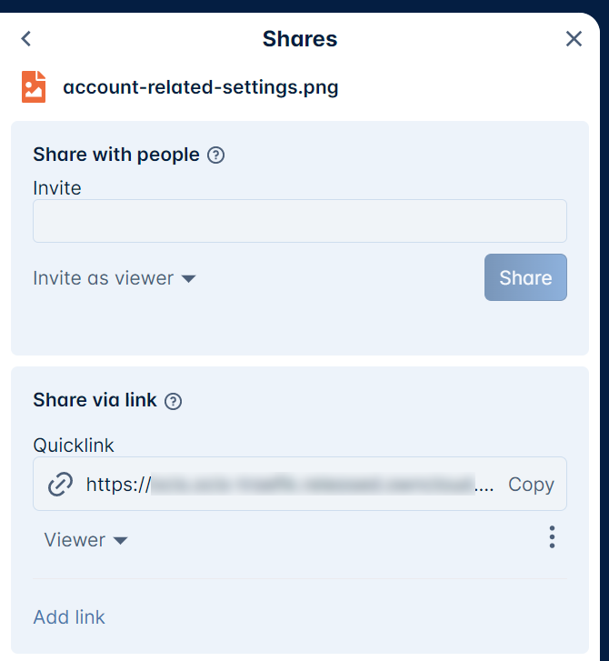
A quick-action link also works for external people not registered on the Infinite Scale server. Below the Share with people section, provide a name for the link and set an Expiration date and a password before hitting Share. For security reasons, the only possible role for unregistered users is viewer.
Sharing Roles and Permissions
-
Members can be added to a space so that they gain access to all files and folders within the space. Members are granted sharing and space permissions, depending on their role.
-
Members can have different roles and permissions in different spaces.
-
When sharing single files and folders only, sharees are granted the sharing, but not the space permissions.
The following table describes the default roles and their permissions.
| With the exception of the "Uploader" role, permissions sum up with increasing responsibility. |
| Role | Sharing Permissions | Space Permissions |
|---|---|---|
Uploader |
|
|
Viewer |
|
|
Contributor |
|
|
Editor |
|
|
Manager |
|
|
Internal |
(2) |
(2) |
Personal Sharing View
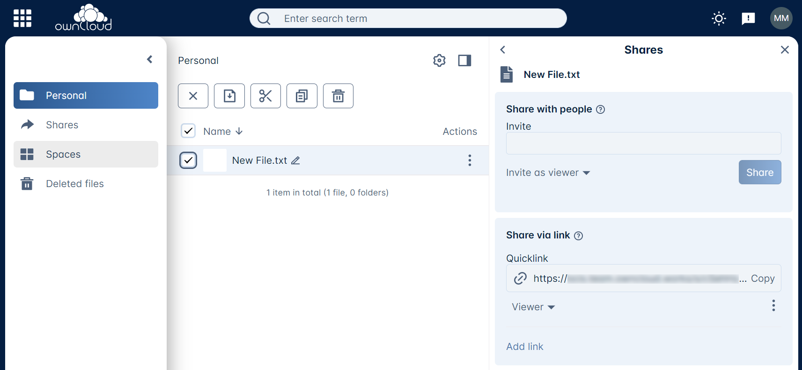 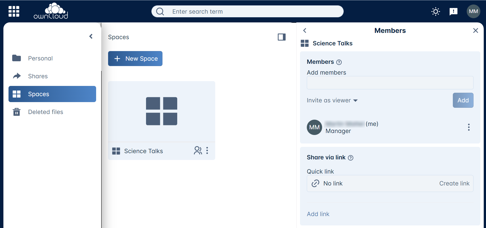 |
Spaces View
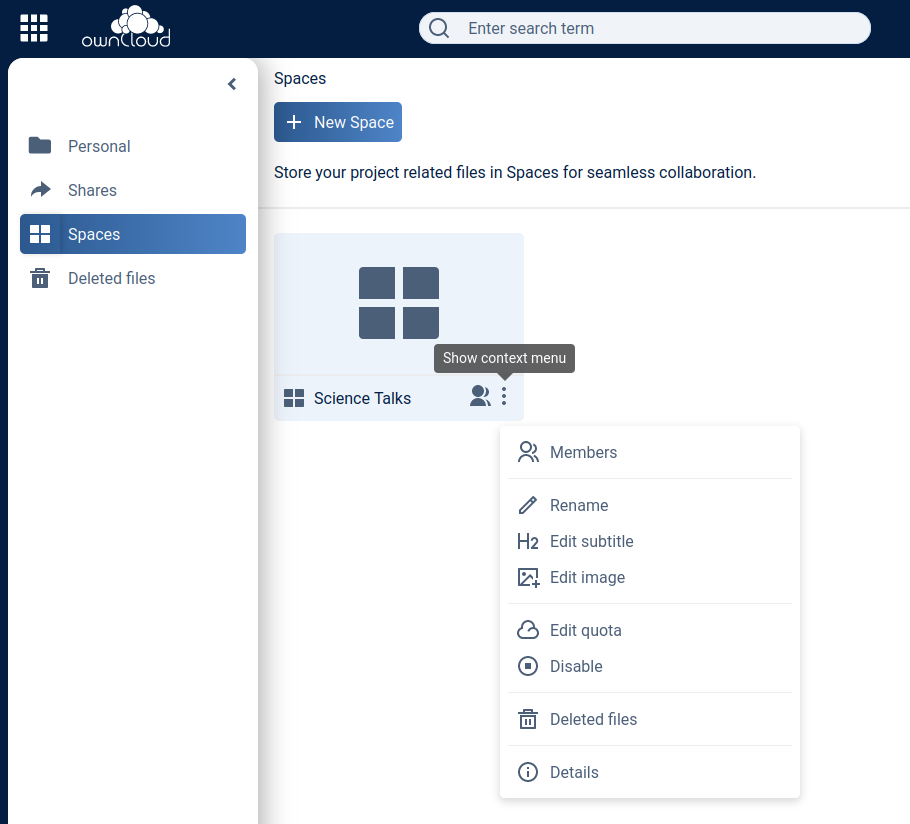 |
(1) … By deactivating, a Manager can disable any access to a space including sharing and syncing. This can be used to keep data in a frozen state before finally deleting it later on. To regain full access including sharing and syncing, a deactivated space can be activated again.
(2) … When creating a "Quicklink" with the role Internal assigned, recipients of those links can quickly access a resource they already have access to. This makes it easier to reference content in big spaces, therefore the name Internal. To access a Quicklink, the user must have an account and a grant to that resource with one of the other roles available. If the link recipient has no account and has not been granted access to the shared resource, accessing the linked content is not possible and nothing will be shown.
Contextual Help
ownCloud Web offers contextual help. If available, you will see a question mark as shown in the image below:
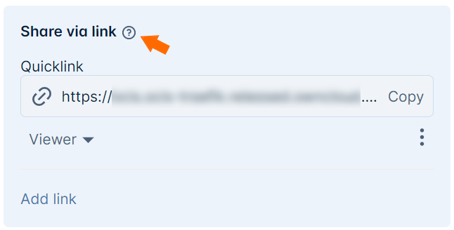
When clicking on the question mark, a context specific frame providing a help text will show up and can be closed by clicking outside the frame. See the image below for an example.
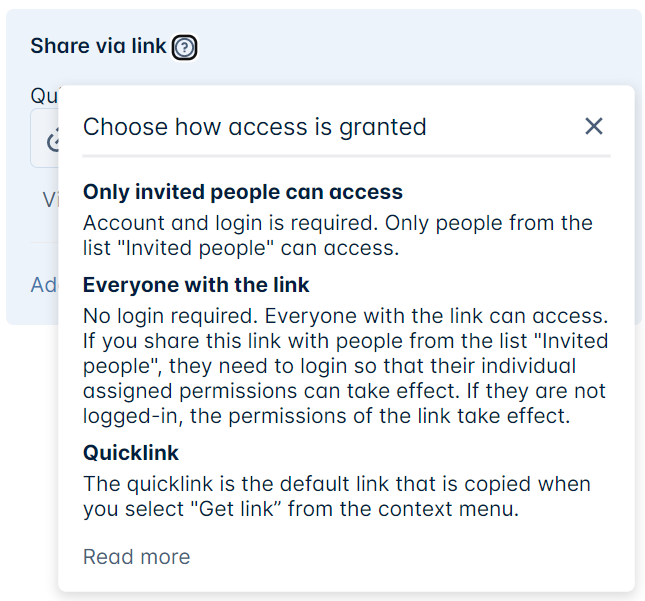